Controls
Introduction
Blend has a huge control palette available to the user. At this time not all controls are supported in the Noesis GUI system, but a big set of the most important controls are ready to be used. The following chart shows a quick view of the main controls supported in the current version.
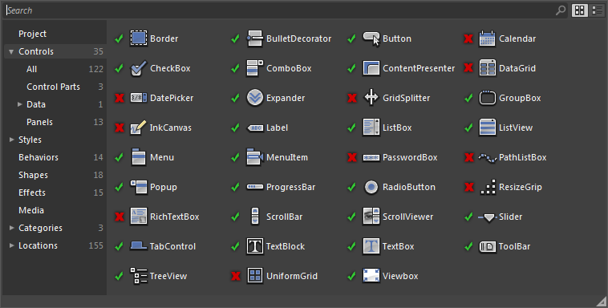The Controls in detail
Border
Is a decorator that draws a visual border and/or a background around any other UI element.
In the following example, a Border with a red BorderBrush and green Background has been added to a Ellipse
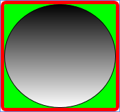See Border.
BulletDecorator
Is a decorator that can have two elements, a bullet (usually a graphic) and a content (usually a text).
In the following example a Ellipse has been added as the bullet, and a simple TextBlock is the content of the BulletDecorator.
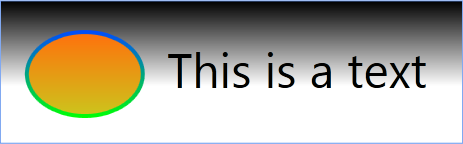See BulletDecorator.
Button
Represents a interface Button that can be clicked from Mouse or Keyboard (when it is focused).
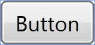See Button and BaseButton.
CheckBox
Is a button paired with a text that can have tree states: Checked, Unchecked and Indeterminate.
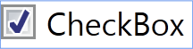See CheckBox.
ComboBox (and ComboBoxItem)
Is an selection control that shows all the items in a drop-down box. Every item is owned by a unique ComboBoxItem that provides functionality to its ComboBox owner.
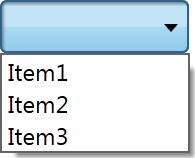See ComboBox and ComboBoxItem.
ContentPresenter
Is used inside the template of a ContentControl to indicate where in the visual tree the content is going to be displayed.
See ContentPresenter.
Expander
Is a control with a header and a collapsible section.
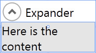See Expander.
GroupBox
Has a header and a section that acts as a container for other controls, specially for RadioButtons
See GroupBox.
Label
Provides text for a control
See Label.
ListBox (and ListBoxItem)
Is a selection control showing selectable items
See ListBox and ListBoxItem.
ListView (and ListViewItem)
Similar to a ListBox, but supports a more advanced display of items
See ListView and ListViewItem.
Menu (and MenuItem)
Represents a hierarchical list of items (MenuItems) that can be clicked.
Popup
Shows an overlay window that has content inside.
See Popup.
ProgressBar
Is a control that represents the current progress related to a total value.
See ProgressBar.
RadioButton
Is a button that can have two states (Checked, Unchecked or Undeterminate) and when several RadioButtons are grouped together, only one can have the Checked state.
See RadioButton.
ScrollBar
Is a control with a Thumb that can move freely between a given distante, generally used to represent the scroll offset of a partially visible content.
See ScrollBar.
ScrollViewer
Is a control that can contain a bigger element that is scrolled using two ScrollBars
See ScrollViewer.
Slider
Allows to move a Thumb between a range of values
See Slider.
TabControl (and TabItem)
Is a control that holds several tabs (TabItems) to group its content.
See TabControl.
TextBlock
Displays a fixed text
See TextBlock.
TextBox
Displays and editable text
See TextBox.
ToolBar (and ToolBarItem)
Is a bar that contains several options in the form of ToolBarItems
See ToolBar and ToolBarItem.
TreeView (and TreeViewItem)
Displays a hierarchical collection of values (TreeViewItem) that can be collapsed and expanded.
See TreeView and TreeViewItem.
User Controls and Custom Controls
Although the control palette is quite wide, and the styling and templating system allows very powerful solutions, sometimes we need to create our own controls that adapt to our program requirements. In this case we have two options: User Controls and Custom Controls
User Controls
A user control is a control that uses a XAML file to combine some other controls inside. Let's see with a sample.
Imagine that we need a user control that has two buttons and a textblock where some results are going to be written depending on which button is pressed. This is a very simple example, but il will illustrate the process quite well.
For creating our user control, just select "New Item" from the file menu in Blend, and create a new UserControl named "MyControl.xaml"
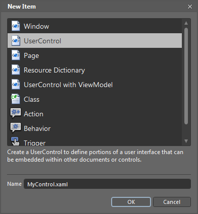Now MyControl is like a new Window where you can resize and put elements inside. Just put a TextBox and two Buttons inside, and add some events for the Click on the buttons to write inside the textbox. Also I'm putting a rectangle to decorate my user control a little.
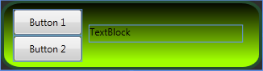Now, our user control is available from the controls palette in blend, and can be dragged into the MainWindow like any other control
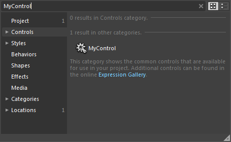More information about User Controls in NoesisGUI can be found in the UserControl tutorial
Custom Controls
A custom control is more oriented to the functionality, letting the designer to later customize the appareance using styles and templates. We are going to show hoy to create a simple custom control which have a enum property that is used to control the template appareance.
In blend there is no dialog to create a new custom control. We need to create the class purely in C# deriving from the desired base class, and adding the properties and behavior using code.
So we start creating our class giving the name "MyEnumControl"
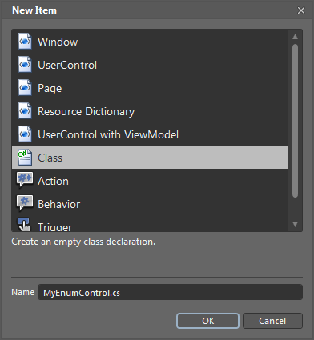And we add through code a dependency property of type ValueType
namespace MyCustomControl
{
public enum ValueType
{
TypeRed,
TypeGreen
}
public class MyEnumControl: Control
{
public MyEnumControl()
{
}
public static readonly DependencyProperty ValueTypeProperty = DependencyProperty.Register("ValueType",
typeof(ValueType), typeof(MyEnumControl), new FrameworkPropertyMetadata(ValueType.TypeRed));
public ValueType ValueType
{
get { return (ValueType)GetValue(ValueTypeProperty); }
set { SetValue(ValueTypeProperty, value); }
}
}
}
We won't add any behavior to the class because next we are going to modify the appareance of our Custom Control with the help of the template and its property triggers. So we throw two MyEnumControls to the main window, both of them with different ValueTypeProperty values, and next we create a template for the controls
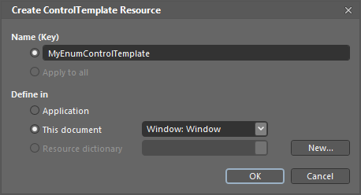For the template, we are going to add a simple ellipse with a gradient, and using the property triggers, we are going to assign a Red gradient when the ValeType is TypeRed, and a Green gradient when the value is TypeGreen.
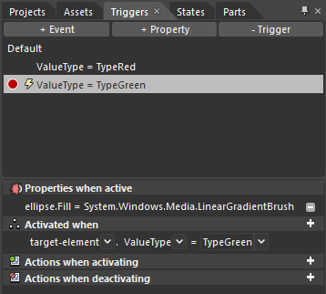In Xaml, the code generated is this:
<ControlTemplate x:Key="MyEnumControlTemplate" TargetType="{x:Type local:MyEnumControl}">
<Grid>
<Ellipse x:Name="ellipse" Stroke="Black">
<Ellipse.Fill>
<LinearGradientBrush EndPoint="0.5,1" StartPoint="0.5,0">
<GradientStop Color="Black" Offset="0"/>
<GradientStop Color="Red" Offset="1"/>
</LinearGradientBrush>
</Ellipse.Fill>
</Ellipse>
</Grid>
<ControlTemplate.Triggers>
<Trigger Property="ValueType" Value="TypeRed"/>
<Trigger Property="ValueType" Value="TypeGreen">
<Setter Property="Fill" TargetName="ellipse">
<Setter.Value>
<LinearGradientBrush EndPoint="0.5,1" StartPoint="0.5,0">
<GradientStop Color="Black" Offset="0"/>
<GradientStop Color="#FF5AFF00" Offset="1"/>
</LinearGradientBrush>
</Setter.Value>
</Setter>
</Trigger>
</ControlTemplate.Triggers>
</ControlTemplate>
And the final result
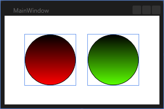More information about Custom Controls in NoesisGUI can be found in the CustomControl tutorial